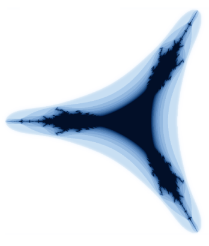
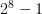
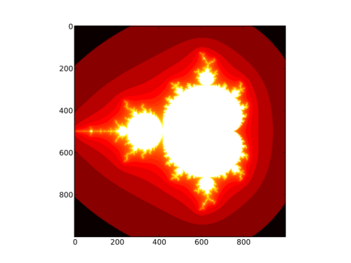

| Author: | The NumPy Community |
|---|---|
| Date: | 2008 |
Note
This is a tutorial-style introduction to NumPy. In addition, a reference guide is available, which details all the available modules, objects and functions.
NumPy is a framework for manipulating collections of numbers. In linear algebra, such collections are known as matrices, but in NumPy we call them arrays. Arrays are collections of numbers of a certain data-type, such as integer or floating-point number1. An array also has an associated shape that tells us how the numbers are organised. For example, the array containing
[1, 2, 3, 4]
has a shape of (4,), whilst the matrix
[[1, 2],
[3, 4],
[5, 6]]
has a shape of (3, 2).
Examples of arrays include
NumPy also contains some essential array libraries, which
These libraries are extended in NumPy's sister-project, SciPy.
Before we start, let's make sure we have a working copy of NumPy installed. Launch Python, and type
>>> import numpy as np
>>> np.__version__
'1.2.0.dev5311'
As long as you have a version >= 1.0.5, we're good to go. For installation instructions, see the NumPy homepage.
Throughout this tutorial, I shall make use of IPython, a fantastic Python shell that runs on all the major platforms. If you don't have access to IPython, skip ahead to Constructing arrays.
Note
Start IPython now. You should see a prompt like this:
In [2]:
Import NumPy:
In [2]: import numpy as np
IPython has many useful features, the most important of which are:
Type the following:
In [3]: np.linalg.<TAB>
where <TAB> refers to the TAB-key. You should see:
In [2]: np.linalg.
np.linalg.LinAlgError np.linalg.cond
np.linalg.Tester np.linalg.det
np.linalg.__builtins__ np.linalg.eig
np.linalg.__class__ np.linalg.eigh
np.linalg.__delattr__ np.linalg.eigvals
np.linalg.__dict__ np.linalg.eigvalsh
np.linalg.__doc__ np.linalg.info
np.linalg.__file__ np.linalg.inv
[...]
IPython examined the np.linalg module, and returned all the possible completions. This is a great way to explore all the functions are available in NumPy.
Once you see an interesting function, you'd like to know how to use it:
In[3]: np.transpose?<ENTER>
IPython displays the documentation for transpose. Also note that the function signature is given after Definition:. In order to view the actual source code, use two question marks instead of one.
When building a new array, we need to specify two attributes:
Let's create an array which holds the numbers 1 through 4:
>>> np.array([1, 2, 3, 4], dtype=int)
array([1, 2, 3, 4])
If you don't provide the data type, NumPy will guess what it should be:
>>> x = np.array([1, 2, 3, 4])
>>> x
array([1, 2, 3, 4])
>>> x.dtype
dtype('int32')
NumPy has many different numerical types, of which the most important are int, float, complex, bool and uint (unsigned integer).
Now, let's manipulate the shape of the array, x, we just created:
>>> x = x.reshape([2,2])
>>> x
array([[1, 2],
[3, 4]])
Sometimes, we like to create a 2x2 array from the outset:
>>> np.array([[1, 2], [3, 4]])
array([[1, 2],
[3, 4]])
There are various other methods for creating arrays. A popular one is zeros, which creates a new array and fills it with (wait for it) zeros:
>>> x = np.zeros((3,3))
>>> x
array([[ 0., 0., 0.],
[ 0., 0., 0.],
[ 0., 0., 0.]])
The array we just created is of dtype float. Maybe we'd prefer an integer array:
>>> x.astype(int)
array([[0, 0, 0],
[0, 0, 0],
[0, 0, 0]])
We've constructed arrays of specified shapes and types so far, but we could do that without NumPy too, using nested sequences. The real power of NumPy comes into play when we start to manipulate array data.
Probably the simplest example is adding two arrays together:
| Python | NumPy |
|---|---|
| [x + y for x, y in zip(a,b)] | a + b |
NumPy knows how the elements line up, and add them accordingly. The same goes for many other operations, e.g.,
>>> np.mod([2, 4, 8], [1, 2, 3])
array([0, 0, 2])
In this example, the result is
[mod(2, 1), mod(4, 2), mod(8, 3)]
Note that many NumPy functions accept lists, tuples and other sequences in addition to arrays. Internally, these sequences are converted to arrays before any processing takes place. On the other hand, arrays also behave like sequences: you can slice them, calculate their lengths and so forth.
Functions like numpy.mod that operate on individual elements are called universal functions. Others include:
abs arccos arccosh arcsin arcsinh arctan arctan2 arctanh bitwise_and bitwise_not bitwise_or bitwise_xor ceil conj conjugate cos cosh degrees equal exp expm1 fabs floor floor_divide fmod frexp hypot invert isfinite isinf isnan ldexp left_shift log log10 log1p maximum minimum mod modf ones_like power radians right_shift rint sign signbit sin sinh sqrt tan tanh true_divide
Remember that you can use the question-mark in IPython to inspect the docstrings of any of these. If you are running pure Python, use help instead.
There are so many functions in NumPy, that it may sometimes be difficult finding what you are looking for. The lookfor function searches through the NumPy docstrings, and displays the first line of each docstring found:
>>> np.lookfor('integrate')
Search results for 'integrate'
------------------------------
numpy.trapz
Integrate y(x) using samples along the given axis and the composite
I'm sure Buzz Lightyear loves fractals; they just go on, and on, and on forever! I've looked at these pretty pictures many times before, and often wondered how to render them. Today, I tried, and was pleasantly surprised to discover that, using NumPy, you can do it using fewer than 20 lines of code!
Of course, we'd like to display and save these images, and for that I'll use matplotlib. I you don't have matplotlib installed -- don't worry! I'll also show you how to do it using the Python Imaging Library, which comes standard with many distributions.
We shall construct the Mandelbrot set, i.e. all the black points shown above. The set is calculated as follows:
Given a complex number z, make a copy of the number (call it c), and then perform the following operation recursively:
z = z**2 + c
If we repeat this an infinite number of times (not very practical!), the result will either blow up or shrink to nothing. All the points whose magnitudes go to infinity are part of the Mandelbrot set.
We clearly cannot compute an infinite number of iterations, so we make a compromise. We say that any point z which, after 100 iterations, has a magnitude of greater than 10, belongs to the Mandelbrot set.
Good enough, let's go!
Without NumPy, it is easy enough to do the computation on one number. We'd like to do it on a grid of numbers, and that is where NumPy excels. Let's now construct a grid of numbers on the complex plane.
First, meet linspace:
>>> np.linspace(0, 1, num=5)
array([ 0. , 0.25, 0.5 , 0.75, 1. ])
linspace generates num points between two given values. We'd like to run our real numbers from, say, -2 to 1:
>>> re = np.linspace(-2, 1, 1000)
re now contains a thousand numbers between -2 and 1. Similarly, we let y run from -1.5 to 1.5:
>>> im = np.linspace(-1.5, 1.5, 1000)
The next weapon in our arsenal is meshgrid, which generates x and y grid positions:
>>> x, y = np.meshgrid([1,2,3], [1,2])
>>> x
array([[1, 2, 3],
[1, 2, 3]])
>>> y
array([[1, 1, 1],
[2, 2, 2]])
Note how x and y only vary in only one direction. Let's build our coordinate positions:
x, y = np.meshgrid(re, im)
We are now able to construct the complex grid:
z = x + 1j*y
Note that, in Python, the complex number i is written 1j. Our grid should be a 1000x1000 array:
>>> z.shape
(1000, 1000)
The next step is to make a copy of z, which we assign to c:
>>> c = z.copy()
Why couldn't we just do the following?
>>> c = z
In Python, objects are always referred to by pointers. c = z would simply have pointed c towards z, so we wouldn't have made a copy at all. In scientific computation, we often work with large data-sets, and copies use a lot of memory. Therefore, NumPy returns views (not copies) whenever possible:
# Create a new array
>>> x = np.array([1,2,3])
# View the first two elements and call it `y`
>>> y = x[:2]
>>> y
array([1, 2])
# Modify the first element of `y`
>>> y[0] = 3
# And note that `x` has also changed!
>>> x
array([3, 2, 3])
So, if you want to make copies of arrays, use x.copy()!
We also need a storage container for our output. Let's call it fractal:
fractal = np.zeros(z.shape, dtype=np.uint8)
We created an array of zeros of the same shape as our grid (1000x1000), and of type uint8, or unsigned integers of width 8. The width refers to the number of bits used to represent this number in memory. With 8 ones and zeros, we have integers from 0 through 255, or .
There are many other methods for creating arrays; two of which are zeros_like and empty. We could have used zeros_like above:
fractal = np.zeros_like(z).astype(np.uint8)
This is a little bit less efficient than using zeros, since we first allocate an array (of the right shape, but of floating point type) and then change its type to the required uint8, which necessitates a copy.
empty is used to create an array, but without initialising the values at all. For example:
>>> np.empty((2, 2))
array([[ -1.13561020e+002, 9.88131292e-324],
[ 0.00000000e+000, 2.78134232e-309]])
empty is blazingly fast, but unless you know for certain that you are going to initialise all of the array, it's safer to use zeros.
Almost all newcomers to scientific computing in Python have been warned about the for-loop. Yes, it is true: for-loops are slow in Python. But (and this is a big but), often it does not matter.
For example, if we wanted to square the elements of an array element-wise, the following would have been a very inefficient implementation:
for i in range(1000):
for j in range(1000):
x[i, j] = x[i, j] ** 2
NumPy provides a simpler, faster alternative:
x = x**2 # create a new array and fill it with x^2
or even better:
x *= x # multiply each element of x with itself, in-place
On the other hand, say you had a hundred vectors, each as a row of array. To calculate the length of each of the vectors, using a for-loop would be quite acceptable. In this case, the loop executes rapidly (only 100 iterations), and takes up much less time than the calculation itself. Sometimes, using for-loops can even save time, because it allows you to work with smaller chunks of memory at a time (i.e., a row of the matrix, instead of the whole matrix):
# generate a random matrix M, containing a hundred row-vectors
M = np.random.random([100, 1000])
# rows = 100, columns = 1000
rows, columns = M.shape
# make an array in which to store our output
norms = np.empty(rows)
for i in range(rows):
norms[i] = np.sqrt(np.sum(M[i]**2))
Let's get back to work. We need to repeat the operation z = z + c on our coordinates 100 times:
for n in range(100):
print "Iteration %d" % n
z *= z
z += c
Note that we make use of in-place operators above. It is more efficient to do
x *= 3
than
x = x * 3
In the first case, x is simply replaced in memory by x * 3. In the second case,
We said that we approximate the Mandelbrot set as all points that have a magnitude of greater than 10 after 100 iterations:
>>> z[np.isnan(z)] = np.inf
>>> mask = (np.abs(z) > 100)
>>> fractal[mask] = 255
The above code makes use of boolean masks. These are arrays containing booleans (True or False values), and can be used to index arrays, e.g.
>>> mask = np.array([True, False, True])
>>> arr = np.array([1, 2, 3])
>>> arr[mask]
array([1, 3])
The first line in our code (z[np.isnan(z)] = np.inf) is a workaround: when squaring very large complex numbers, the result may be nan or not-a-number. To work around this, we ask NumPy to replace all nan values in z with infinity.
Then, we create a mask that indicates which points belong to the Mandelbrot set (points for which np.abs(z) is greater than 100). Finally, we set all the corresponding pixels in the output picture to 255 (white).
After all that hard work, we deserve some eye candy.
>>> import matplotlib.pyplot as plt
>>> plt.imshow(fractal)
>>> plt.show()
Using PIL, the Python Imaging Library:
>>> import PIL.Image >>> f = PIL.Image.fromarray(fractal) >>> f.save('fractal.png')Now, view the fractal.png with an image viewer, like your web browser.
That's it! We rendered the Mandelbrot set, using fewer than 20 lines of code!
We can add some colour to the Mandelbrot set, by assigning a colour to each point, depending on how quickly it "escapes" towards infinity. Below is a full listing of the code above, modified to yield this beautiful result:
import numpy as np
import matplotlib.pyplot as plt
ITERATIONS = 100
DENSITY = 1000 # warning: execution speed decreases with square of DENSITY
x_min, x_max = -2, 1
y_min, y_max = -1.5, 1.5
x, y = np.meshgrid(np.linspace(x_min, x_max, DENSITY),
np.linspace(y_min, y_max, DENSITY))
c = x + 1j*y # complex grid
z = c.copy()
fractal = np.zeros(z.shape, dtype=np.uint8) + 255
for n in range(ITERATIONS):
print "Iteration %d" % n
# --- Uncomment to see different sets ---
# Tricorn
# z = z.conj()
# Burning ship
# z = abs(z.real) + 1j*abs(z.imag)
# ---
# Leave the lines below in place
z *= z
z += c
mask = (fractal == 255) & (abs(z) > 10)
fractal[mask] = 254 * n / float(ITERATIONS)
plt.imshow(np.log(fractal), cmap=plt.cm.hot,
extent=(x_min, x_max, y_min, y_max))
plt.title('Mandelbrot Set')
plt.xlabel('Re(z)')
plt.ylabel('Im(z)')
plt.show()
| [1] | In fact, NumPy can handle homogeneous collections of any type, by setting the numeric type to object. |
| [2] | This might strike you as odd: we said that arrays are homogeneous containers, with a single associated data-type. Fortunately, NumPy allows those data-types to be compositions of simpler types, e.g., (int, float). The array is still homogeneous, with each entry an integer-float pair. |